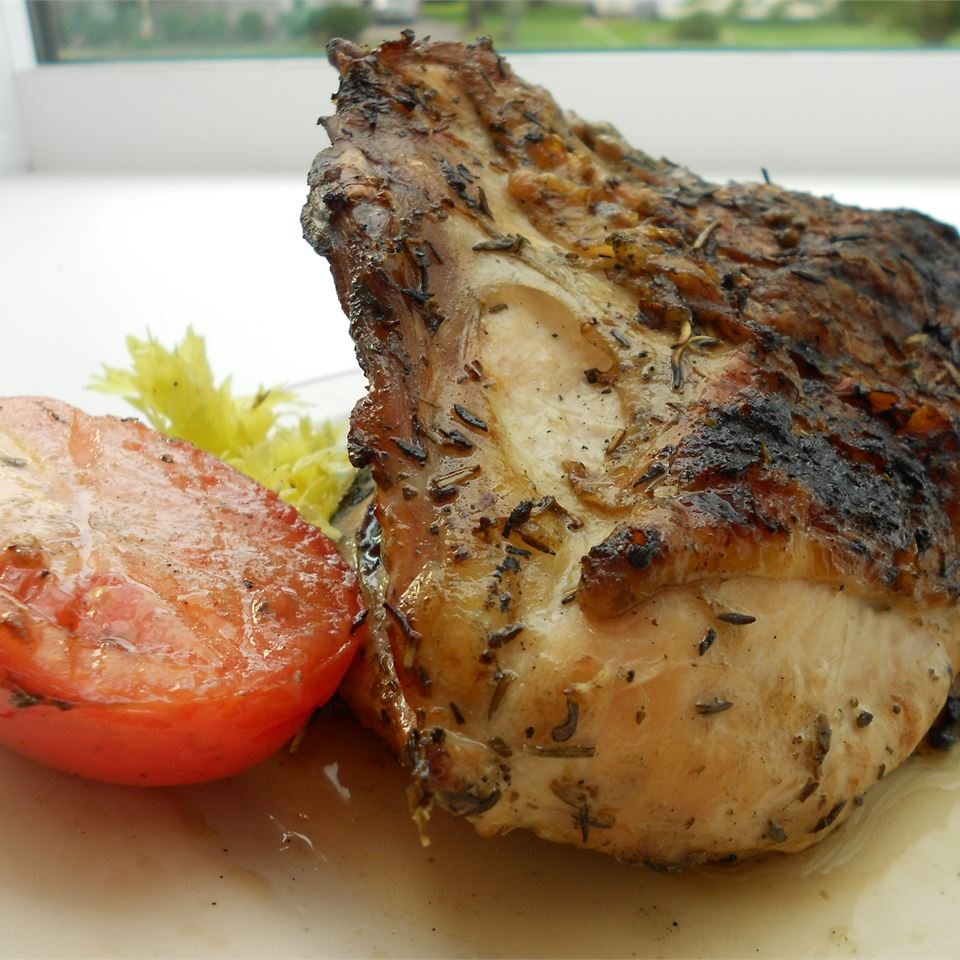

The Greek chicken

Description
A very good light summer dish. I serve it with sliced tomatoes, feta cheese, and garlic bread.
Ingredients
- ½ cup olive oil
- 3 cloves garlic, chopped
- 1 tablespoon chopped fresh rosemary
- 1 tablespoon chopped fresh thyme
- 1 tablespoon chopped fresh oregano
- 2 lemons, juiced
- 1 (4 pound) chicken, cut into pieces
Steps
- In a glass dish, mix the olive oil, garlic, rosemary, thyme, oregano, and lemon juice. Place the chicken pieces in the mixture, cover, and marinate in the refrigerator 8 hours or overnight.
- Preheat grill for high heat.
- Lightly oil the grill grate. Place chicken on the grill, and discard the marinade. Cook chicken pieces up to 15 minutes per side, until juices run clear. Smaller pieces will not take as long.